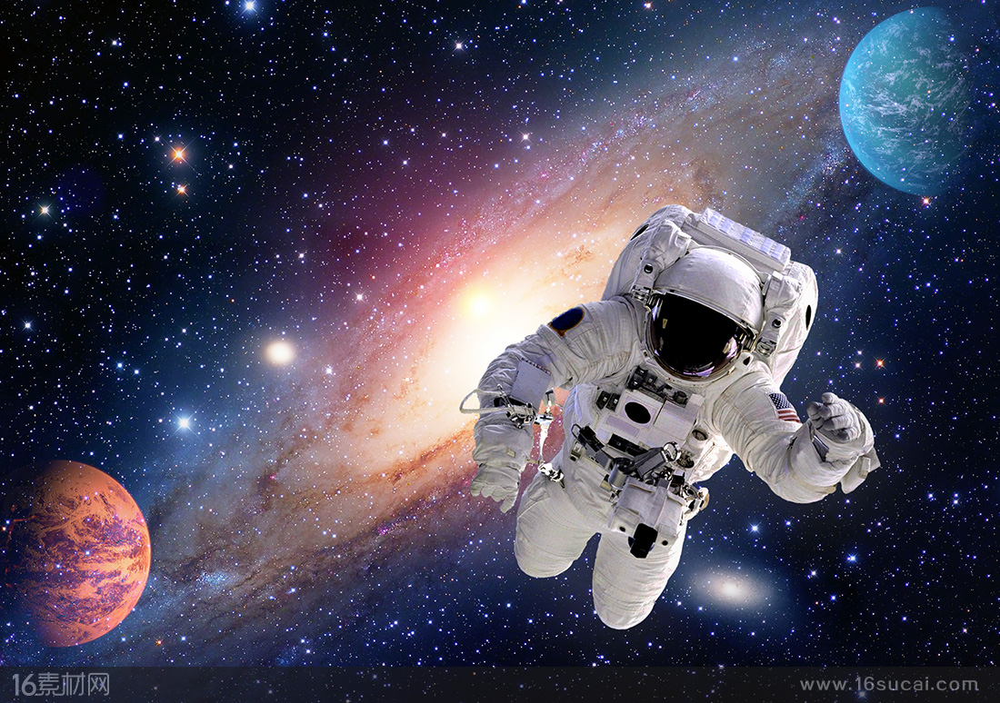

星火 |
天文网 |
web 天文博物馆 |
 |
创建于1996年 |
人类登月
人类乘宇宙飞船登月球的探测活动。飞到月亮上去是人类千百年来的幻想。随着空间技术的发展1959年，苏 联发射的 "月球1号"飞到月球附近，进行绕月飞行，开始了人类对月球的考察。1961年5月，美国总统肯尼迪在国会上提出了在60年代末把人送到月球上探测的计划 --"阿波罗月球探测计划"。
到达月球的宇航员在漆黑的月空中看到大而发光的地球。月球的探测器还在月球空间拍下地球的照片以及绕观月球和地球的照片。月球上的地球光要比地球上的月光明亮8倍多。
本世纪50年代以来，人类对月球探测所取得的成就，远远超过了多少世纪以来的地面观测。"阿波罗"登月成功，是人类科学的结晶，开创了人类认识月球的新纪元。随着科学技术的发展，人类将可能建立沿月球轨道飞行的实验室，巨大的天文望远镜也将在月球上从没有空气的太空观测天空;人也将可能把月球作为出发到遥远行星的一个落脚点。